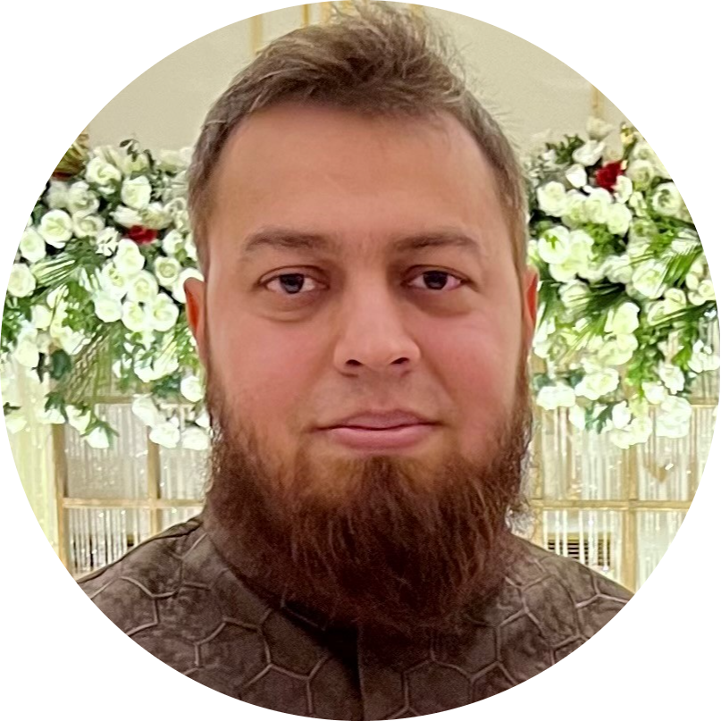

|  |
Saqib RanaWeb Developer |
As a seasoned Frontend Web Developer with over 14 years of experience, I have honed my skills in creating visually appealing and user-friendly websites. With a focus on North American companies, I have worked on a wide range of projects including over 500 athletic websites for American high schools, colleges, universities, and athletic conferences. My expertise in the field has earned me a top-rated status on Upwork, with a 100% job success rate and over 23,000 hours of experience. With a passion for creating engaging and dynamic websites, I am committed to delivering high-quality results that meet the needs and exceed the expectations of my clients.
Serving more than 1,400 athletic programs and 100 conferences, PrestoSports is a software-as-a-service company that provides integrated industry-leading sports technology solutions to colleges, high schools, and athletic organizations for building athletic brands, igniting fans, and funding sports programs. The sites which PrestoSports hosts have nearly 10 million visits each month and give colleges an affordable web solution among many other products offered by the PrestoSports network.
I am working for PrestoSports since 2012 as a Senior Web Engineer with the following responsibilities:
With a strong foundation in entrepreneurship and business management, my career has taken me from founding a successful startup to building a thriving solo career as a top-rated freelancer.
In 2009, I established Xyris Technologies, an online business specializing in web design and development on elance.com (now Upwork). Over two years, I managed a team of 20 resources and was actively involved in the development of projects. Despite the company's eventual dissolution due to financial constraints, the lessons I learned during that time have served as a valuable foundation for my career.
Today, as a top-rated freelancer on Upwork, I bring a unique blend of business acumen and technical expertise to each project I undertake.
Provided in-depth analysis on various software development projects as ICT Business Analyst.
Responsibilities:
Responsible for participating in the full life cycle of website development projects. Had a specific brief to ensure the websites build for customers precisely matched their requirements.
Responsibilities:
I am one of the most experienced freelance web developers on Upwork from Pakistan. With over 23,000 work hours logged and earnings exceeding $300,000, I have established a solid reputation in the industry. My outstanding performance has earned me a top rated plus badge and a perfect 100% job success rate. With a wealth of expertise in web development, I am a go-to choice for businesses seeking top-notch results.
Worked as part of a multi-disciplinary team, carrying out ad-hoc tasks as requested by the IT Manager.
Responsibilities: